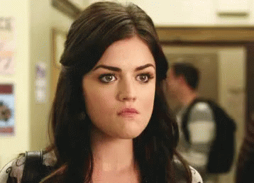

Parte 1
Unos días antes…
Carlos, se acerca el cumpleaños de Antonio, ¿que se te ocurre que le podemos hacer? ¿Será que le compramos la computadora que tanto nos ha pedido? Él me respondió que Antonio preferiría una fiesta con sus amigos que una computadora. Yo sabía de que eso no era cierto, pero decidí seguirle la corriente porque no quería comprar una computadora tan cara. Carlos me dijo que tenía una buena idea, la cual tenía que ver con una gran fiesta sorpresa con la familia y sus compañeros de clase. Me dijo que no me preocupara, que esta vez él se encargaría de todo.
Yo he sido siempre la que ha organizado las fiestas de cumpleaños de mis hijos. Me preocupaba que Carlos no pudiera, pero bueno al final decidí dejarlo y apoyarlo. Me dijo que su idea era armar la fiesta como siempre en la casa de mi hermana. Me pidió ayuda con las invitaciones y con pedirle permiso a mi hermana de usar su casa. Le pregunté mas detalles, pero no me quiso decir nada. ¡Aguántenselo!, me dijo que, si me decía los detalles, lo iba a empezar a contradecir, criticar, y que no lo iba a dejar en paz. Qué se cree ese hombre, pero bueno… no quiero empezar a discutir, así que me conformaré.
{kind=link}
Parte 2
¡Es el día!, levántate Carlos. Hay que levantar a los niños para ir a decirle feliz cumpleaños a Antonio. Me levanté rápido y bajé a hacer loncheras, mientras Carlos ni en cuenta. Quisiera tener ese don de poder quedarme dormida tan rápido y profundo como él, pero bueno. Al rato llegó con Daniel y Luis y me dijeron que ya estaban listos, así que fuimos, lo despertamos (aunque creo que ya estaba despierto) y lo abrazamos. Luego me despedí y me fui a trabajar.
En la noche regresé a la casa y mientras Antonio estaba en su cuarto haciendo tareas, le pregunté a Carlos si todo estaba listo, a lo cuál me respondió que por supuesto. Así que cuando estuvimos listos y recibimos el mensaje de mi hermana, nos dirigimos a su casa. Al llegar entramos y yo empecé a gritar feliz cumpleaños, pero mi grito fue interrumpido por el vacío del lugar. Admito que la decoración me gustó mucho, ¿pero y la gente? Carlos me dijo que supuestamente deberían de haber estado afuera todos y nada más entrando ellos debían aparecer. Me dijo que llamara a mi hermana, pues ella estaba con los invitados. La llamé, pero no contestó. Al cabo de una media hora, mi paciencia colmó y le fui a reclamar a Carlos y le dije que de ahora en adelante yo me encargaría de los cumpleaños y no él.
{kind=link}